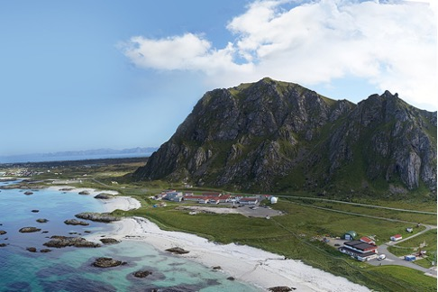
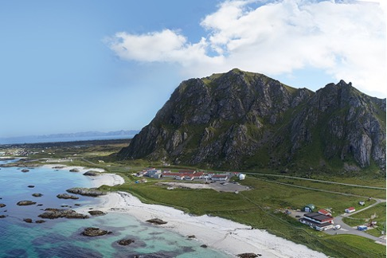

Hva gjør vi?
- Vi jobber med arbeidstegninger/skisser og utarbeider modeller i skala.
- Vi lærer om mikrokontrollere og sensorteknologi (Arduino).
- Vi ser på teknologisk utvikling og jobber med etiske problemstillinger knyttet opp mot teknologi.
Skolen har mye spennende utstyr (3D-printere, laserkutter osv. ) som du får kjennskap til og mestre bruken av etter du er ferdig med faget.


ToF 1
I ToF 1 har det også vært vanlig praksis å dra på studietur til Trondheim, men vi undersøker nå å isteden starte å dra til Andøya space, og gjennomføre et prosjekt som heter CANSAT
der. CANSAT er en årlig internasjonal konkurranse i regi av ESA (European Space Agency).
Elevene skal lage innmaten til en satellitt som blir skutt/flydd opp til en høyde litt over 1000 meter.
 

ToF 2
ToF 2 bygger videre på innholdet i ToF 1. Vi har et større fokus på vitenskapelige metoder, bruk av statistikk og databehandling. Vi skal se på teknologi i et historisk perspektiv og hvordan den har formet samfunnet rundt oss. Vi skal også se på etiske problemstillinger knyttet opp mot teknologi.
Her også gjennomfører vi større praktiske prosjekter, men disse vil i større grad være knyttet opp mot elevvalgte problemstillinger. På den måten vil ikke alle gjøre de samme tingene slik som i ToF1.
Viktig info
Eksamen i ToF 1 er muntlig-praktisk (Det praktiske elementet består av en presentasjon/diskusjon omkring et selvvalgt elevarbeid du har levert inn i løpet av skoleåret)
Eksamen i ToF 2 er enten muntlig praktisk eller skriftlig.
Både ToF 1 og ToF 2 gir 0,5 realfagspoeng.
Les mer her: